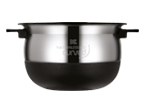
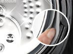
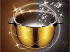
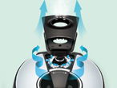
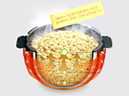
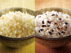

쿠쿠 기술력
|

에코 커브드 내솥 |
취사 시 열을 보존해 주는 신개념 버블층이, 새는 열을 완벽히 차단하여 열전달과 열보존을 극대화 함으로써, 밥솥 최고의 차진 밥맛을 구현합니다. |
|---|---|
|

2중 모션 패킹 |
2중 모션 패킹은 취사 시 높아진 압력으로 밀폐층과 지지층 사이에 있는 중공층이 압축하여 밀폐력이 높아져 증기가 샐 틈이 없게 됩니다. |
|
다이아쉴드 내솥 |
다이아쉴드층의 높은 대화력과 뛰어난 내구성, 그리고 눈부시게 빛나는 아름다움으로 보다 찰지고 맛있는 IH최상의 밥맛을 선사합니다. |
|

Xwall 코팅 |
깊이있는 아름다움으로 빛나는 엑스웰 블랙샤인 코팅은 고열, 고압, 염분에 강해 당신의 밥맛을 안전하게 지켜드립니다. |
|

클린 시스템 |
강력스팀 자동 살균과 논스톱 스팀배출로 세균은 물론 냄새까지 말끔히 배출하고 밥물고임 방지배수로로 밥솥내부의 고인 밥물을 말끔하게 청소합니다. |
|

Fresh 발아현미 |
내솥에서 직접 현미쌀을 발아시키므로 발아현미의 영양이 그대로 살아있습니다. 발아현미 쌀, 발아과정이 없는 타사와 다른 갓 틔운 발아현미의 영양을 얻으세요. |
|

소프트 현미 잡곡밥 |
쿠쿠의 업그레이드 된 열제어 기술로 까칠한 현미밥과 딱딱한 콩, 잡곡 등을 부드럽게 취사하여 언제나 영양 많은 밥을 드실 수 있습니다. |